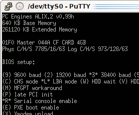
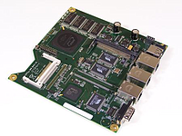

Alix
Dieser Artikel wurde für die folgenden Ubuntu-Versionen getestet:
Dieser Artikel ist mit keiner aktuell unterstützten Ubuntu-Version getestet! Bitte diesen Artikel testen und das getestet-Tag entsprechend anpassen.
Artikel für fortgeschrittene Anwender
Dieser Artikel erfordert mehr Erfahrung im Umgang mit Linux und ist daher nur für fortgeschrittene Benutzer gedacht.
Zum Verständnis dieses Artikels sind folgende Seiten hilfreich:
Die ALIX-Boards  sind x86 Embedded Systeme, die sich sehr gut für den lüfterlosen und stromsparenden (ca. 4–8 Watt) Betrieb als Router, NAS oder kleiner Server eignen. Aufgrund der unterschiedlichen Varianten dieser Boards ist es möglich, Server auch für eher ungewöhnliche Aufgaben aufzubauen (Beispiele ). Es sollte aber beachtet werden, dass sich Stromsparen und hohe Leistung tendenziell ausschließen.
sind x86 Embedded Systeme, die sich sehr gut für den lüfterlosen und stromsparenden (ca. 4–8 Watt) Betrieb als Router, NAS oder kleiner Server eignen. Aufgrund der unterschiedlichen Varianten dieser Boards ist es möglich, Server auch für eher ungewöhnliche Aufgaben aufzubauen (Beispiele ). Es sollte aber beachtet werden, dass sich Stromsparen und hohe Leistung tendenziell ausschließen.
Als Prozessor verwenden alle Boards den AMD Geode LX, als internes Speichermedium wird eine Compact-Flash-Speicherkarte (CF) genutzt. Externe Festplatten können via USB angeschlossen werden, allerdings besitzen nicht alle Varianten USB-Ports.
ALIX-Boards sind die direkten Nachfolger der WRAP-Boards  . Auch fertige Mini-PCs wie der (inzwischen obsolete) fit-PC1 oder der Linutop 2 verwenden diese Boards.
. Auch fertige Mini-PCs wie der (inzwischen obsolete) fit-PC1 oder der Linutop 2 verwenden diese Boards.
Alternativen für Nichtbastler – und manche Anwendungszwecke – sind fertige Komplettlösungen wie beispielsweise die Linksys NSLU2, die diversen Linkstations der Firma Buffalo oder die Asus EeeBox, die aber jeweils andere Prozessoren und Chipsätze verwenden.
Hinweis:
Ab Ubuntu 10.10 unterstützen die Installationsmedien nur noch Prozessoren mit PAE-Erweiterungen. Die Installation von Ubuntu 12.04 ist mit der unter ALIX CF-Bootmedium erstellen beschriebenen Methode möglich.
Alle anderen hier beschriebenen Installationsmethoden erfordern für Ubuntu 12.04 die Berücksichtigung der Hinweise im Abschnitt "Installation Ubuntu 12.04 scheitert".
Serielle Konsole¶

Die Mehrzahl der ALIX-Boards hat eine serielle Schnittstelle und keinen Grafikausgang und Tastatur-Controller. Um die serielle Konsole zu nutzen, wird ein Nullmodem-Kabel benötigt. Weiterhin muss der verwendete PC eine serielle Schnittstelle haben, um die Daten des ALIX entgegenzunehmen. Da viele moderne Computer und Notebooks keinen seriellen Anschluss haben, wird meist ein serieller USB-Adapter benötigt. Für die Kommunikation über die serielle Schnittstelle kann eines der folgenden Programme verwendet werden.
PuTTY¶
PuTTY ha eine grafische Oberfläche und kann über das Menü gestartet werden. Alternativ kann man PuTTY auch direkt mit den richtigen Einstellungen starten [2]:
putty -serial /dev/ttyS0 -sercfg 38400,8,n,1,X
screen¶
Wenn man lieber mit der Konsole arbeitet oder gerade kein XServer läuft, kann man das Programm screen verwenden. Eine Beschreibung dieses Programms würde den Rahmen des Artikels sprengen, daher sei auf den Artikel Screen verwiesen.
Der Befehl für das Verbinden mit einer seriellen Konsole lautet:
screen /dev/ttyS0 38400
In Notfällen helfen diese beiden Tastenkombinationen weiter:
Hilfe: Strg + A , ?
Beenden: Strg + A , K (Großbuchstabe!)
cu¶
cu (Akronym für „call up another system“) ist ein einfaches serielles Terminalprogramm für die Konsole. Um das Programm zu verwenden, muss das Paket
cu
 mit apturl
mit apturl
Paketliste zum Kopieren:
sudo apt-get install cu
sudo aptitude install cu
installiert werden [1]. cu wird mittels
sudo cu -e -o -s 38400 -l /dev/ttyUSB0
gestartet, wobei der Gerätename /dev/ttyUSB0 gegebenenfalls durch den entsprechenden Gerätenamen der seriellen Schnittstelle zu ersetzen ist (bei eingebauten Schnittstellen kann dieser z.B. /dev/ttyS0 sein).
Minicom¶
Minicom ist ein weiteres Terminalprogramm für die Konsole, das allerdings nicht immer wie gewünscht funktioniert. Um das Programm zu verwenden, muss das Paket
minicom
mit apturl
Paketliste zum Kopieren:
sudo apt-get install minicom
sudo aptitude install minicom
installiert werden [1]. Minicom wird nun mittels
sudo minicom -s
auf dem PC eingerichtet [2]. Hier stellt man Folgendes ein:
Einstellungen zum seriellen Anschluss --> A - Serieller Anschluss : /dev/ttyS0 --> E - Bps/Par/Bits : 38400 8N1
Jetzt werden die Einstellungen als Standardvorgabe (Default) gespeichert:
Speichern als »dfl
|  |
| ALIX-Board (Bildquelle ) |
Installationsmethoden¶
Ein fundamentaler Unterschied in den verfügbaren Varianten der ALIX-Boards ist die Präsenz (bzw. das Fehlen) eines VGA-Ausgangs. Boards mit VGA-Ausgang sind mit einem Award-BIOS ausgestattet und ähneln daher in vielem einen normalen PC. Eine Installation auf diesen Boards unterscheidet sich deshalb kaum von der Installation eines sonstigen Servers.
ALIX-Boards ohne VGA-Ausgang sind hingegen mit einer seriellen Schnittstelle ausgestattet und haben ein stark funktionsreduziertes BIOS (tinybios), welches dem Benutzer gerade bei der Installation die Aufgabe schwermachen kann, da es z.B. nicht in der Lage ist, ein Betriebssystem von einem austauschbaren Datenträger (Stick, USB-CD-Laufwerk oder Festplatte) zu starten.
Allerdings kann man nicht nur von der CF-Karte, sondern auch aus dem Netzwerk booten (PXE). Will man also die Installation direkt auf der Zielplattform ausführen, verbleiben die Optionen, das Installationssystem entweder aus dem Netzwerk zu starten oder von einer dafür speziell vorbereiteten CF-Karte. Dieser Artikel befasst sich schwerpunktmäßig mit letzterer Variante der ALIX-Boards, da sie wegen ihrer speziellen Eigenschaften einer gesonderten Behandlung bedürfen. Aufgrund dieser Eigenschaften und der daraus resultierenden Einschränkungen ergibt sich folgende Installationsmatrix:
| Installationsmethoden für ALIX-Boards | ||
| Auf der Zielplattform | Auf einem Hilfscomputer | |
| Standard-Installation | Über ein Ubuntu-Netzwerkinstallationsimage. Setzt voraus, dass das ALIX-Board über PXE gestartet wird. Beschreibung im ersten Teil dieses Artikels. | Start einer normalen Ubuntu-Installation auf einem Hilfscomputer, der über angeschlossenes Kartenlesegerät das Betriebssystem direkt auf der CF-Karte installiert [4] [5]. Bei Varianten mit integrierter Grafikkarte geeigneter, allerdings auch auf rein serielle Varianten anwendbar. Beschreibung – allerdings wenig detailliert – im zweiten Teil des Artikels. |
| Optimierte Installation | Erstellung eines angepassten Minimalbetriebssystem auf dem ALIX-Board mittels PXE. | Vorbereitung eines Betriebssystems für ALIX-Boards auf einem Hilfscomputer mit installiertem gleichen oder neuerem Ubuntu. Mehr dazu im Artikel ALIX CF-Bootmedium erstellen. |
Installation über PXE¶
Vorbereitung der PXE Installation¶
Da das ALIX-Board über PXE gestartet wird, sind weiterhin die Installation eines DHCP-Servers (falls im Netzwerk nicht vorhanden) und eines TFTP-Servers notwendig. Näheres findet sich im Artikel PXE-Installation. Dort finden sich auch die Links, unter denen die Netzwerkinstallations-Images (netboot) zu bekommen sind.
Da das ALIX-Board nur eine serielle Schnittstelle hat, muss dem Kernel des Netzwerkinstallationsimages dies auch mitgeteilt werden. Folgt man der Anleitung im Artikel PXE-Installation, wird der Bootvorgang durch die im netboot-image mitgelieferten Datei ubuntu-installer/i386/pxelinux.cfg/default beschrieben:
include ubuntu-installer/i386/boot-screens/menu.cfg default ubuntu-installer/i386/boot-screens/vesamenu.c32 prompt 0 timeout 0
Diese Datei lädt nicht nur eine komplexe Reihenfolge ineinander verschachtelter Include-Dateien, sondern erzeugt auch ein ansprechendes grafisches Menü. Da beides auf einem System mit serieller Schnittstelle und ohne Grafikkarte nicht funktioniert, muss diese Datei also mit einer folgendem Inhaltes ersetzt werden:
SERIAL 0 38400 0 CONSOLE 0 DEFAULT ubuntu-installer/i386/linux APPEND tasks=standard pkgsel/language-pack-patterns= pkgsel/install-language-support=false priority=low vga=normal initrd=ubuntu-installer/i386/initrd.gz console=ttyS0,38400n8 --
Hiermit wird der PXE-Bootlader angewiesen, seine Ein- und Ausgaben über die serielle Schnittstelle zu tätigen, um danach umgehend die Minimalinstallation im Expertenmodus des Setups zu starten. Damit das ALIX-Board allerdings auch über das Netzwerk bootet, muss diese Fähigkeit im BIOS erst einmal aktiviert werden.
Also das Nullmodem-Kabel anschließen und ein Terminal mit den passenden Parametern starten (38400 baud, 8 Datenbits, 1 Stopbit, keine Parität und XON/XOFF flow control). Dies kann z.B. so erfolgen:
$ sudo cu -e -o -s 38400 -l /dev/ttyUSB0
wobei der Gerätename /dev/ttyUSB0 gegebenenfalls durch den entsprechenden Gerätenamen der seriellen Schnittstelle zu ersetzen ist (bei eingebauten Schnittstellen kann dieser z.B. /dev/ttyS0 sein). Nun kann man das Gerät unter Strom setzen, und wenn alles richtig angeschlossen ist, wird man auf dem Terminal sehen, wie der Speichertest ausgeführt wird. Um ins Einstellungsmenü ("setup") zu gelangen, ist noch während des Speichertests ein Druck auf die Taste
S erforderlich. Ist dies rechtzeitig gelungen, gelangt man ins Hauptmenü des tinybios:
PC Engines ALIX.2 v0.99h 640 KB Base Memory 261120 KB Extended Memory 01F0 Master 848A TOSHIBA THNCF256MQG Phys C/H/S 978/16/32 Log C/H/S 978/16/32 BIOS setup: (9) 9600 baud (2) 19200 baud *3* 38400 baud (5) 57600 baud (1) 115200 baud *C* CHS mode (L) LBA mode (W) HDD wait (V) HDD slave (U) UDMA enable (M) MFGPT workaround (P) late PCI init *R* Serial console enable (E) PXE boot enable (X) Xmodem upload (Q) Quit
Mit Druck auf die Taste E aktiviert man den PXE Boot, was beim erneuten Erscheinen des Hauptmenüs dadurch angezeigt wird, dass der Buchstabe E im Hauptmenü nun nicht mehr durch Klammern, sondern durch Sterne gerahmt ist. Sollte die CF-Karte dies unterstützen (was eine moderne Karte sicherlich tun wird), ist die Aktivierung von UDMA sinnvoll, da dadurch die Zugriffe auf der Karte effektiver durchgeführt werden. Durch Druck auf die Taste Q verlässt man das Hauptmenü. Vorher sollte noch das Netzwerkkabel angeschlossen werden, da der Bootvorgang unmittelbar beginnen wird. Die erste Netzwerkschnittstelle (von der der Bootvorgang stattfindet) ist bei Boards mit mehreren Schnittstellen übrigens jene, die direkt neben dem USB Anschluss liegt.
Hinweis:
Um einen einmaligen PXE Bootvorgang durchzuführen, reicht es lediglich, während des Speichertests die Taste N zu betätigen.
Durchführung des Setups¶
Die Installation verläuft nun fast wie gewohnt als ganz normale Textmodus-Installation. Folgende Dinge sollten dabei berücksichtigt werden:
Da das Board keinen Tastaturcontroller hat, kann (und sollte) die Konfiguration der Tastaturbelegung übersprungen werden
Teilweise gestalten sich einige Phasen recht langsam und erwecken so den Eindruck, dass das System eingefroren sei. So erhält man z.B. beim Ausführen der Operation "Download installer components" einen leeren Bildschirm, der eine sehr lange Zeit keine Reaktion zeigt (beim Autor dieses Artikels über 1,5 Stunden!). Es empfiehlt sich, einer anderen Aktivität nachzugehen und nicht darauf zu warten, dass hier etwas passiert. Es kann leider ziemlich lange dauern, und bis jetzt ist der Grund dafür nicht bekannt.
Das Partitionieren sollte idealerweise manuell erfolgen. Eine Auslagerungspartition (swap) empfiehlt sich in der Regel nicht, da der Zugriff auf die CF-Karte im allerbesten Fall die 20 MB/Sek. kaum überschreiten wird - und das nur, wenn eine Hochleistungskarte verwendet wird. Handelsübliche Karten (oftmals als x133 bezeichnet) liefern Leseraten von ca. 17 MB/Sek und Schreibraten von ca. 5 MB/Sek. Die hohe Anzahl Schreibzugriffe in einer Auslagerungspartition dürfte die Lebensdauer der Karte auch negativ beeinflussen.
Viele Probleme bei der Installation entstehen durch die Verwendung eines falschen Kernels: Während auf modernen Mehrprozessor-Systemen der ...-generic-Kernel gut geeignet ist, sollte auf ALIX-Boards ein ...-i386-Kernel zum Einsatz kommen.
Nach Abschluss aller wichtigen Installationsschritte und der Installation des Bootmanagers darf das System auf keinen Fall neu gestartet werden, da es noch nicht für die Ein- und Ausgabe über serielle Schnittstelle konfiguriert ist. Drei Komponenten des Systems müssen darüber instruiert werden, ihre Ein- und Ausgaben über die serielle Schnittstelle zu tätigen:
Der Bootmanager (GRUB)
Der Kernel
Das Terminal der Konsolensession
Um die nachfolgenden Anpassungen vorzunehmen, ist es notwendig, in die Shell zu wechseln. Der vorletzte Menüpunkt des Installers (Execute a shell) erlaubt dies. Die Installationspartition auf der CF-Karte ist unter /target zu finden. Soll also z.B. die Datei /etc/hosts in der Zielinstallation editiert werden, so ist diese jetzt unter /target/etc/hosts zu finden. Nach Beendigung der händischen Anpassungen kann die Shell mit dem Befehl exit verlassen werden.
Anpassung des Bootmanagers¶
Die nachfolgenden Änderungen konfigurieren die serielle Ein- und Ausgabe sowohl für den Bootmanager selbst als auch für den Kernel.
Bei Ubuntu kommt der Bootloader GRUB 2 zum Einsatz. Der Bootloader muss für die Ausgabe über die serielle Schnittstelle angepasst werden. Dazu muss die Datei /etc/default/grub bearbeitet [3] werden. Die Datei muss folgenden Inhalt aufweisen:
# If you change this file, run 'update-grub' afterwards to update # /boot/grub/grub.cfg. GRUB_DEFAULT=0 GRUB_HIDDEN_TIMEOUT=0 GRUB_HIDDEN_TIMEOUT_QUIET=true # Timeout verkürzt GRUB_TIMEOUT="3" GRUB_DISTRIBUTOR=`lsb_release -i -s 2> /dev/null || echo Debian` # Serielle Schnittstelle hinzugefügt GRUB_CMDLINE_LINUX_DEFAULT="verbose console=ttyS0,38400n8 reboot=bios" GRUB_CMDLINE_LINUX="" # Konfiguration der seriellen Schnittstelle der ALIX-Boards: GRUB_SERIAL_COMMAND="serial --unit=0 --speed=38400" GRUB_TERMINAL=serial # Uncomment to disable graphical terminal (grub-pc only) #GRUB_TERMINAL=console # The resolution used on graphical terminal # note that you can use only modes which your graphic card supports via VBE # you can see them in real GRUB with the command `vbeinfo' #GRUB_GFXMODE=640x480 # Uncomment if you don't want GRUB to pass "root=UUID=xxx" parameter to Linux #GRUB_DISABLE_LINUX_UUID=true # Uncomment to disable generation of recovery mode menu entrys #GRUB_DISABLE_LINUX_RECOVERY="true"
Die eingegebenen Änderungen bewirken, dass GRUB 2 seine Ein- und Ausgaben über die serielle Schnittstelle entgegen nimmt und ansonsten alle Pausen recht kurz ausfallen. Die Änderungen werden durch Eingabe des Befehls
sudo update-grub
wirksam.
Anpassung der Konsole¶
Damit die serielle Schnittstelle auch noch nach dem Bootloader benutzt wird, muss die Datei /etc/init/ttyS0.conf im Event-Handler-Verzeichnis von Upstart mit folgendem Inhalt erstellt [3] werden:
# ttyS0 - getty # # This service maintains a getty on tty1 from the point the system is # started until it is shut down again. start on stopped rc RUNLEVEL=[2345] stop on runlevel [!2345] respawn exec /sbin/getty -8 38400 -L ttyS0
Um den überflüssigen (und ressourcenintensiven) Start der sechs Bildschirmkonsolen zu unterbinden, sind die Dateien /etc/init/tty1.conf bis /etc/init/tty6.conf zu löschen.
Installation über ein Hilfssystem¶
Für die Installation über ein Hilfssystem wird ein Computer benötigt, an dem ein Kartenleser mit dem Zielmedium für das ALIX-Board angeschlossen ist. Das Ubuntu-Installationssystem kann nun sowohl über CD/DVD, USB Stick oder PXE gestartet werden.
Ab hier verläuft die Installation genau so, wie sie im vorherigen Abschnitt beschrieben ist. Auch hier erübrigt sich die Konfiguration der Tastaturbelegung, wenn das ALIX-Board keinen Tastaturcontroller und VGA-Adapter hat.
Achtung!
Es ist unbedingt darauf zu achten, in der Phase der Partitionierung, Formatierung und Festlegung des Zielmediums die CF-Karte anzugeben. Unterläuft hier ein Irrtum, kann schnell das Hilfssystem beschädigt werden!
In der Phase, in der die manuellen Anpassungen erfolgen, ist die dauerhafte Zuweisung der Netzwerkschnittstellennamen zu löschen. Hintergrund: Wenn im System eine unbekannte Netzwerkschnittstelle auftaucht (und das ist jede Netzwerkschnittstelle vor ihrer ersten Benutzung), sucht UDEV nach einem noch unbenutzten Schnittstellennamen (z.B. eth0) und stellt eine persistente Verbindung zwischen der Schnittstelle (die durch ihre MAC-ID eindeutig identifiziert wird) her, so dass beim nächsten Systemstart garantiert ist, dass sich hinter dem Schnittstellennamen immer derselbe Netzwerkadapter befindet.
Dies erfolgt durch die Datei /etc/udev/rules.d/70-persistent-net.rules, die einen Inhalt in folgender Form aufweist:
# This file was automatically generated by the /lib/udev/write_net_rules
# program, run by the persistent-net-generator.rules rules file.
#
# You can modify it, as long as you keep each rule on a single
# line, and change only the value of the NAME= key.
# PCI device 0x8086:/sys/devices/pci0000:00/0000:00:05.0 (e1000)
SUBSYSTEM=="net", ACTION=="add", DRIVERS=="?*", ATTR{address}=="00:1c:42:20:9e:c3", ATTR{dev_id}=="0x0", ATTR{type}=="1", KERNEL=="eth*", NAME="eth0"Transferiert man nun einen Datenträger mit installierten Betriebsystem auf ein anderes System, so wird dieses beim Start neue (unbekannte) Netzwerkschnittstellen vorfinden und diesen auch neue Namen zuweisen. Befand sich also auf dem Installationscomputer schon eine Netzwerkschnittstelle, so hat sich diese in oben genannter Datei verewigt. Die Netzwerkadapter des Zielsystems mit zwei Netzwerkschnittstellen werden nicht wie erwartet die Namen eth0 und eth1 erhalten, sondern z.B. eth1 und eth2.
Um dieses Verhalten zu vermeiden, ist die Datei /etc/udev/rules.d/70-persistent-net.rules zu löschen. Findet das System sie nicht, so wird sie einfach neu erstellt (und das Zuweisen der Namen beginnt wieder bei eth0).
Prinzipiell kann das System auch erst mal auf dem Hilfssystem gebootet werden, um die vollständige Funktionalität zu testen, was allerdings bei einer Konfiguration für serielle Konsole einen weiteren Computer erfordert, über dem das System dann über die serielle Verbindung bedient werden kann. Wichtig ist vor der Übertragung der CF-Karte ins ALIX-Board, die Datei /etc/udev/rules.d/70-persistent-net.rules zu löschen.
LEDs ansteuern¶
ALIX 2 und 3 Boards verfügen in der Regel über eine oder mehrere LEDs zur Signalisierung von internen Zuständen. Diese können über das /sys Dateisystem direkt aus allen Applikationen angesprochen werden - unter der Voraussetzung, dass die dafür passenden Kernelmodule (Treiber) geladen wurden. Bei Ubuntu 10.04 ist es nicht nötig, das erforderliche Modul selber zu kompilieren. Dieses befindet sich bereits im System und braucht nur geladen zu werden:
sudo modprobe leds-alix2
In Ubuntu 12.04 wurden sie leider wieder aus dem Kernel-Paket entfernt. Daher müssen diese noch hergestellt werden. Ab Ubuntu 8.10 befinden sich die Quellcodes in den offiziellen Paketquellen, eine Installation ist daher unproblematisch durch Eingabe der folgenden Befehlssequenz zu erreichen[10]:
cd /usr/src apt-get -y install build-essential apt-get -y install leds-alix-source apt-get -y install linux-headers-$(uname -r) tar -xvjf leds-alix.tar.bz2 cd modules/leds-alix/ make make install cd /usr/src rm -rf /usr/src/modules apt-get --yes --purge remove linux-headers-$(uname -r) apt-get --yes --purge remove leds-alix-source apt-get --yes --purge remove build-essential apt-get --yes --purge autoremove apt-get clean
Um diese zu laden, muss noch folgender Befehl eingegeben werden:
sudo modprobe leds-alix
Damit alle möglichen Schalt- und Blink-Sequenzen mit den LEDs möglich sind, sollten zusätzlich noch die Module für allgemeine LED-Aufgaben geladen werden:
sudo modprobe ledtrig-default-on sudo modprobe ledtrig-heartbeat sudo modprobe ledtrig-gpio sudo modprobe ledtrig-timer
Alle notwendigen Kernelmodule können in die Datei /etc/modules eingetragen werden, damit sie bei jedem Systemstart automatisch geladen werden. Nachdem die Module geladen wurden, gibt es im Verzeichnis /sys/class/leds/ drei neue Unterverzeichnisse. LEDs können nun manuell durch folgende Befehle beeinflusst werden:
LED1 einschalten:
sudo echo 1 > /sys/class/leds/alix\:1/brightness
LED1 ausschalten:
sudo echo 0 > /sys/class/leds/alix\:1/brightness
LED1 als Systemauslastungsanzeige - je mehr Systemauslastung, desto schneller schlägt das Herz:
sudo echo heartbeat > /sys/class/leds/alix\:1/trigger
LED1 als Platten-Aktivitätsanzeige:
sudo echo ide-disk > /sys/class/leds/alix\:1/trigger
LED1 mit zeitgesteuertes Blinken - 1 Sekunde an, 5 Sekunden aus:
sudo echo timer > /sys/class/leds/alix\:3/trigger sudo echo 1000 > /sys/class/leds/alix\:3/delay_on sudo echo 5000 > /sys/class/leds/alix\:3/delay_off
Um die anderen beide LEDs zu schalten, wird die 1 in alix\:1 durch 2 bzw. 3 ersetzt (Quelle: ALIX LEDs ).
Problembehebung¶
ALIX1D, ALIX3C3, ALIX3D3¶
Speziell bei den Varianten mit Award BIOS (ALIX3C3, ALIX3D3) sollte kontrolliert werden, ob ein neueres BIOS verfügbar ist.
Rechner hängt beim Booten ca. 15-30 Minuten, schwarzer Schirm¶
Die Ursache kann sein, dass das System ohne Monitor oder mit einem Monitor ohne DDC-Unterstützung gestartet wird. Es gibt mehrere Möglichkeiten zur Abhilfe:
Kurzschließen der Pins 6 und 12 am VGA-Adapter, z. B. mit einer Büroklammer. Pin 6 (Masse) ist der erste Pin von rechts in der mittleren Reihe, wenn ihr auf die Buchse draufschaut (breite Seite oben). Pin 12 ist der zweite Pin von rechts in der untersten Reihe. Siehe auch Link-Verzeichnis.
Bauen eines eigenen Kernels[9] mit dem Parameter
CONFIG_FIRMWARE_EDID=n
Aktualisieren des BIOS auf Version 7 01./16/2009 (auf der Seite von PC Engines
wird leider nicht die Versionsnummer angezeigt; jedoch die Version mit der Bemerkung "[...] fix VGA DDC issue [...]" ist die Richtige, Dateiname: alixbio7.zip).
Betrifft alle Ubuntu-Version seit 8.04.
Warnung BIOS V.8beta 07/19/2010 "various fixes", "release MFGPT timers"¶
Mit dieser Version kann es zu Problemen mit den Netzwerk-Interfaces kommen. Ein Netzwerk-Link besteht, laut dmesg / ethtool ist alles in Ordnung, es werden jedoch keine Pakete übertragen.
ALIX2D2¶
Falls beim Einbinden des Dateisystems die Fehlermeldung auftritt, dass der letzte Mount-Zeitpunkt in der Zukunft liegt, kann dies daran liegen, dass keine RTC-Batterie vorhanden ist (z.B. ALIX2D2). Für dieses Problem existieren (mindestens) zwei mögliche Lösungen:
Zum einen lassen sich mittels tune2fs alle zeitbasierten Checks ausschalten:
sudo tune2fs -i 0 <device>
Zum anderen kann e2fsck mit einem Konfigurationsfile unter /etc/e2fsck so konfiguriert werden, dass zeitbasierte Checks ignoriert werden. Hierzu ist es jedoch notwendig, dass initramfs diese Datei in die initram integriert. Ansonsten wird die Datei beim Booten nicht gefunden, da das Dateisystem noch nicht eingehängt ist. Die Konfigurationsdatei muss unter der Sektion [options] die Option broken_system_clock enthalten:
[options]
broken_system_clock = 1Um die Konfigurationsdatei in das initramfs-Image aufzunehmen, benötigt man folgendes ausführbares Skript in /etc/initramfs-tools/hooks/:
1 2 3 4 5 6 7 8 9 10 11 12 13 14 15 16 17 18 19 20 21 22 23 | #!/bin/sh # # Initramfs-tools hook script # # Copyright 2006 Tim Dijstra <tim@famdijkstra.org> # Released under GPLv2 PREREQ="" prereqs() { echo "$PREREQ" } case $1 in prereqs) prereqs exit 0 ;; esac . /usr/share/initramfs-tools/hook-functions [ -f /etc/e2fsck.conf ] && mkdir -p ${DESTDIR}/etc && cp /etc/e2fsck.conf ${DESTDIR}/etc/e2fsck.conf |
Mittels des update-initramfs-Befehls wird das bestehenden initramfs-Image aktualisiert:
sudo update-initramfs -u
Installation Ubuntu 12.04 scheitert¶
Der Installationsvorgang dieser Version bricht mit der Meldung
"Kernel requires features not present on the CPU: PAE"
ab. Entgegen vielen Behauptungen in diversen Foren ist Ubuntu 12.04 sehr wohl mit Prozessoren ohne PAE lauffähig, es handelt sich lediglich um einen Fehler des Installations-Images. Archiv/Ubuntu Precise installieren auf non-PAE Systemen beschreibt, wie es dennoch geht. Wird die weiter oben beschriebene Installationsvariante per PXE verwendet, ist es am einfachsten - es muss lediglich die im genannten Artikel angegebene netboot.tar.gz verwendet werden.
Abgesehen von dieser lästigen Hürde ist der Einsatz von Ubuntu 12.04 zusammen mit ALIX-Boards absolut schmerzfrei.
Links¶
 Übersichtsseite
ÜbersichtsseiteExtern¶
ALIX-Boards
und ALIX – Allgemeine Infos und TippsThe Alix Software Project
- Information about installation techniques, cookbooks and installation templatesAlix Rescue and PE System
- Ubuntu based live rescue and preinstallation system for PXE or bundled deploymentDebian auf dem PCEngines Alix 2c3/2d3
– u.a. Hinweise zur PXE-InstallationVoyage Linux
– Spezielle Linux-Distribution für x86 Embedded SystemsAskoziaPBX
– Asterisk auf ALIX-BoardsDebian Installationshilfe
für den Vorgänger WRAPPC Engines Europäischer Importeur, BIOS-Updates, Support
Bezugsquellen (Beispiele):
Wikipedia – Beschreibung und Abbildungen VGA-Anschluss
Wikipedia – DDC, Display Data Channel
- Erstellt mit Inyoka
-
 2004 – 2017 ubuntuusers.de • Einige Rechte vorbehalten
2004 – 2017 ubuntuusers.de • Einige Rechte vorbehalten
Lizenz • Kontakt • Datenschutz • Impressum • Serverstatus -
Serverhousing gespendet von